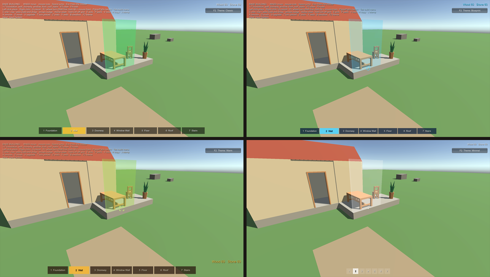
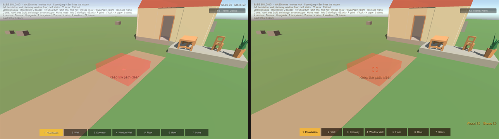

Make It Yours
Everything players see, hear and read while building can be changed or switched off, without code: the preview, the tool highlights, the crosshair, every word, the hotbar, the build menu, sounds, place and remove effects and how Build Zones show. Pick a ready-made theme, change what you like, and your game won't look like every other game using the kit.

In a minute #
- Select your player (the object with the Builder). Add Build Presentation and Build HUD (Add Component > All In One Runtime Building Kit). The sample players already have both.
- On the Build Presentation, set Theme to one of the kit's themes in
Runtime/Themes: Classic, Blueprint, Warm or Minimal. Empty uses Classic. - Press Play. In the samples, F2 (or the button at the top right) switches between the four themes, so you can compare them in the same scene.
Outside Play Mode the Build HUD draws an example in the Game view (a reason, a tip, a message, resources and a hotbar), so you see each change to the theme at once. Turn it off with Preview In Edit Mode on the Build HUD.
The built-in themes #
| Theme | Looks like |
|---|---|
| Classic | Green and red preview, a plus crosshair, dark hotbar with an amber selection, pop and thud sounds |
| Blueprint | Cyan lines on navy, a ring crosshair, a gently pulsing preview, chimes, flashes, zones always shown |
| Warm | Earthy browns and amber, bracket crosshair, bigger slots, resources at the bottom right, wooden thuds |
| Minimal | A small dot, the reason only, numbers instead of names, no help, no sounds, no effects |

Your own theme #
Don't edit the kit's theme assets (an update would replace them). Make your own:
- Tools > All In One Runtime Building Kit > New Theme From Preset > Classic, Blueprint, Warm or Minimal. It is saved
in your data folder (
Assets/AllInOneRuntimeBuildingKitData/Themes) and selected. - Or Assets > Create > All In One Runtime Building Kit > Build Theme, then Start From Preset and Copy at the top of its Inspector.
Set it as the Build Presentation's Theme. Changes show at once, in Play Mode too.
Every setting #
Each part has its own switch, so you can turn it off and let your own UI take over.
| Part | Settings | Off |
|---|---|---|
| Preview | Valid and invalid colours, your own materials, pulse (speed, depth) | Show off: placement is still checked and the reasons still show |
| Tool highlights | Remove, Move, Upgrade, Paint and Copy colours; Use Look Colour tints the preview with the chosen look | Show Tool Highlight off |
| Crosshair | Plus, Dot, Circle, Brackets or your own texture; size, thickness; idle, valid and invalid colours; only while building | Style None (or Hide Crosshair on one Build HUD, for pointer-aimed games) |
| Words | Font, shadow; colour and size of the reason, the tip, the tool line and the messages; where the reason sits; how long messages stay | Show Reason, Show Tip, Show Action, Show Messages |
| Hotbar | Numbers, names, icons (the Piece Definition's Icon), slot size and gap, colours, font size, how many slots | Show off |
| Resources and Help | Corner, colour, size | Show off |
| Build menu | Panel, tab and selection colours, text colours and sizes | Remove or turn off the menu component |
| Sounds | Place, refuse, remove, move, upgrade, undo, select, paint: your clip or a built-in sound, volume, pitch; overall volume | Enabled off (all), or each sound's Enabled |
| Effects | Place: Pop or Flash; remove: Shrink or Flash; duration, curve, colour | None |
| Zones | Forbid and allow colours | Display Never (or While Building, Always) |
| Status line | Colour and size of the line that says what else the next click does (a row and its cost, a blueprint, the chosen look, off grid) | Show Status |
| Text | Every word (see below) |
Sounds need no audio files: the built-in sounds (click, pop, thud, chime, buzz, whoosh) are made by the kit when first played. Put your own clips in their place whenever you like.
Looks your players choose #
Besides the theme (how building looks for everyone), each Piece Definition can have Looks: colours or materials players pick while placing and change later with the Paint tool (see Placement and Sockets).
One piece's own look #
Some pieces deserve their own touch: a stone wall that thuds harder, a lamp that chimes, a door preview in gold. On a Piece Definition, open Look and Sound > This Piece's Own Look and tick what to override: preview colours, place sound, remove sound, effects. Everything else follows the theme.
Your own words, and other languages #
Every word the kit shows players lives in one place, a Text Table: reasons ("Overlaps Wall_03"), tips, messages, the tool line, the resources line and the build menu.
- Copy
Runtime/Themes/RBK_Text_English.assetinto your data folder, or make one with Assets > Create > All In One Runtime Building Kit > Text Table (it starts with every key and its English words). - Change the words. Keep the keys and placeholders such as
{0}(names and numbers go there). - Put the table on your theme (Text).
For several languages, make one table per language and switch the theme's table, or hook in your localisation system:
BuildText.Translate = (key, english) => MyLocalisation.Get("building/" + key, english);
// Later, when the player changes language:
BuildText.NotifyChanged();
After a kit update, a table's Inspector offers Add Missing Words for any new keys.
Bring your own UI #
The Build Presentation works out everything the HUD shows, already in your words, and hands it to any UI:
- No code: its events (Reason Changed, Tip Changed, Action Changed, Message Shown, Resources
Changed, Status Changed, Theme Changed) take strings. Drag your TextMeshPro or UI Text in and pick its
text. - Code: implement
IBuildHudViewon a component next to the Build Presentation (or callAddView). It getsSetTheme,SetReason(reason, tip),SetAction,ShowMessage(message, isError),SetResourcesandSetStatus. - Your own build menu: implement
IBuildMenu(IsOpen,Open,Close), fill it withBuildMenuPages.Fill(the catalog by category) and pick a piece withbuilder.SelectPiece(piece). The theme's Menu colours are there for it too.
Then turn the matching parts of the Build HUD off in the theme, or remove the Build HUD. The Builder itself never draws UI, and its events are still there for anything else.
In code #
presentation.Theme = nightTheme; // switch the whole look at once
presentation.Theme.crosshair.style = CrosshairStyle.None;
presentation.Theme.NotifyEdited(); // after changing a theme from code
builder.ShowPreview = false; // no preview, still checked
Nothing here allocates memory per frame: words are looked up once and reused, and colours are only set when they change.